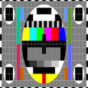
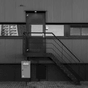
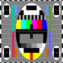
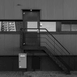

Visualizing the 4D spectrogram
As mathematicians, we go through the trouble of writing out the short-time Fourier transform (STFT) \( V_gf \) as a mapping from \( L^2(\mathbb{R}^d) \) to \( L^2(\mathbb{R}^{2d}) \) but almost all the examples we see are of one dimensional signals \(f\) resulting in spectrograms on \( \mathbb{R}^2 \). In this post, we look at an interactive visualization of spectrograms of images which are functions on \( \mathbb{R}^4 \) to build some intuition and make the case that this processing step could be beneficial as an image preprocessing step just as the usual spectrograms for signals are.
Before jumping in, we will provide a short introduction to the STFT and the two-dimensional Fourier transform. If these are objects you are comfortable with, feel free to jump to the visualization ↓
About the STFT and 2D Fourier transform
In time-frequency analysis, the main tool is the short-time Fourier transform (STFT) which computes a local Fourier transform on a segment of a signal, resulting in a 2-dimensional function \(V_g(x, \omega)\) which gives the Fourier transform (indexed by \(\omega\)) of a segment centered at \(x\). If you look online, this is how most people use the short-time Fourier transform and the resulting 2D images, called spectrograms can be interpreted by humans and computers alike to gain insights about the signals being analyzed.
{kind=link}
Formally, we write the short-time Fourier transform as
The short-time Fourier transform can be preferable to just using a Fourier transform since we can tell at which parts of the signal certain frequencies dominate. If we were to just use the squared modulus of the Fourier transform, called the spectrum of the signal, we would be unable to separate an arbitrary signal from a time-shifted version of itself.
{kind=link}
Moving up a dimension, if we want to analyze two-dimensional signals we could use the two-dimensional Fourier transform. Here we visualize the signals as (grayscale) images and if we naively compute the Fourier transform of such an image we get the following spectrum.
{kind=link}
Support near the center will indicate that the image consists of low-frequency features and alternatively, support away from the center indicates that the image is made up of high frequency details. Again, we can use the short-time Fourier transform to examine the local frequency contents instead of the global. The generalized form of the STFT definition we saw above for 2 dimensions is
We will look at the modulus of this function for various values of \( (x, y) \).
Visualization
Since the STFT of an image is 4-dimensional, 12 dimensional if you consider the color channels, we have to resort to some trick to display it. In the panel below, hower over a part of the image to see the spectrogram with the positional coordinates set to the hover location. Since we employ logarithmic scaling, the colors are not in perfect accordance with those in the original image but they stay intact to some degree.
Original image
\(\operatorname{SPEC}(x, y, \omega_1, \omega_2)\) at hovered \((x,y)\)
2D Fourier Transform
 



Note that we can make the intuition of certain parts of images being low frequency, such as the sky in image 1, quantitative by looking at the spread of the spectrogram there. We can also read off angles from the spectrogram such as the diagonal railing in image 3.